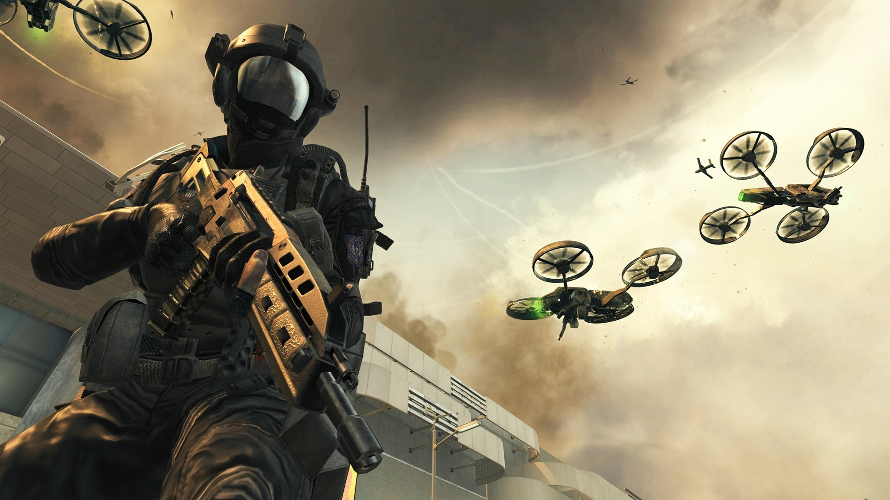
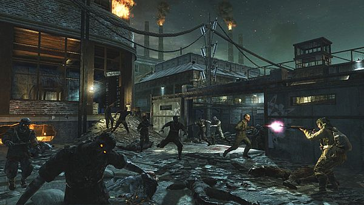
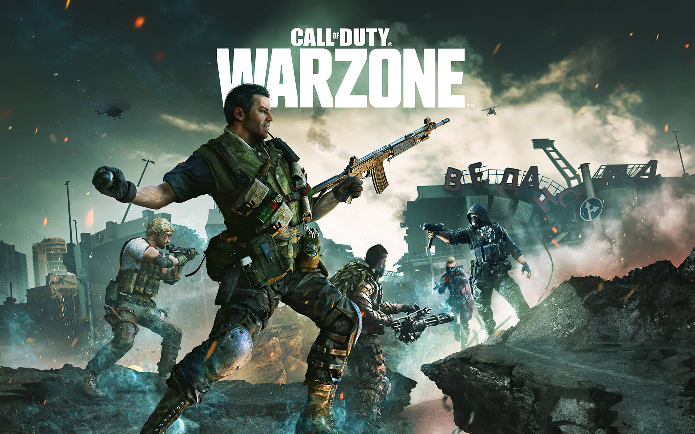

Os principais modos do universo Call of Duty

O modo Multiplayer é o coração clássico de Call of Duty, onde duas equipes se enfrentam em diferentes objetivos e estilos de combate. Ele inclui diversos modos como Domination, Team Deathmatch e Search and Destroy, exigindo tanto habilidade individual quanto trabalho em equipe para vencer as partidas.

O modo Zombies coloca os jogadores contra ondas de mortos-vivos cada vez mais difíceis, exigindo sobrevivência, estratégia e cooperação. Ao longo das partidas, é possível desbloquear armas, descobrir segredos do mapa e avançar em uma narrativa misteriosa que conecta diferentes jogos da franquia.

Warzone é o battle royale gratuito de Call of Duty, onde dezenas de jogadores caem em um grande mapa e lutam para ser o último sobrevivente. Com sistema de loot, contratos e áreas de combate em constante mudança, o modo exige estratégia, movimentação inteligente e decisões rápidas.

Resurgence é uma variação mais acelerada do battle royale, onde os jogadores podem renascer enquanto seus companheiros estiverem vivos. Isso torna as partidas mais rápidas e agressivas, com foco em ação constante e confrontos frequentes do início ao fim.